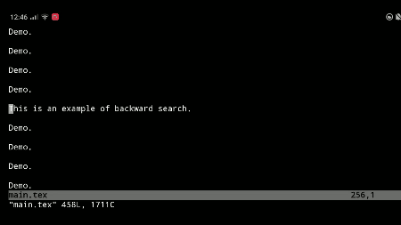

Installation
- Install Termux.
- In Termux, install TeX Live, Vim, and Netcat:
pkg install texlive vim netcat
- Grant storage permission for Termux:
termux-setup-storage
- It is recommnaded to install some auto-compile plugin such as vimtex. If you wish to type LaTeX code with the software keyboard, then you can install vim-quickspell.
- Add the following code to your
~/.vimrc or ~/.vim/ftplugin/tex.vim:
function! ViewPDF(forward)
let pdf = system('echo -n *.synctex.gz')[:-12].'.pdf'
let info = system('pdfinfo '.pdf)
let w = str2float(matchstr(info,'\vPage size: *\zs(\d*\.?\d*)'))
let h = str2float(matchstr(info,'\vPage size:.*x \zs(\d*\.?\d*)'))
if a:forward
let sync = system('synctex view -i '.line('.').':'.col('.').':'.expand('%').' -o '.pdf)
let page = matchstr(sync,'\vPage:\zs(\d*)')
let x = str2float(matchstr(sync,'\vx:\zs(\d*.?\d*)'))
let y = str2float(matchstr(sync,'\vy:\zs(\d*.?\d*)'))
let args = ' -e pageIndex '.(page - 1).' -e offsetX '.string(x / w).' -e offsetY '.string(y / h)
else
let args = ''
endif
let run = system('am start -a android.intent.action.VIEW -d "file://$PWD/'.pdf.'"'.args.' tex.pdfsync.viewer/org.ebookdroid.ui.viewer.ViewerActivity')
let pos = system("echo 'HTTP/1.0 200 OK\nContent-Length: 1\n' | nc -l 8080")
let bpage = matchstr(pos,'\vpage\=\zs(\d*)')
if bpage
let bx = str2float(matchstr(pos,'\vx\=\zs(\d*.?\d*)'))
let by = str2float(matchstr(pos,'\vy\=\zs(\d*.?\d*)'))
let bsync = system('synctex edit -o '.(bpage + 1).':'.string(bx * w).':'.string(by * h).':'.pdf)
let input = matchstr(bsync,'\vInput:.*/\./\zs(.*)\ze\nLine')
let line = matchstr(bsync,'\vLine:\zs(\d*)')
exec 'ex '.input
exec line
endif
endfunction
command V call ViewPDF(0)
command F call ViewPDF(1)
Usage
It is best used with a hardware keyboard.

- In vim, enter
:F to do forward search, or :V to view the output PDF without forward search (jump to Document Viewer).
- In Document Viewer, double tapping on the document to do backward search (jump back to Vim). If it jumps back to this page instead, just press the back button and try again.
Note:
- The TeX files must be compiled with SyncTeX enabled (
-synctex=1).
- The tex file must be in a public directory (
/sdcard/...) rather than private (inside $HOME). Symlinks such as ~/storage/shared/... also cannot be used.
- When opening a TeX file in Vim, the working directory must be that of the main TeX file of the entire project. That is, start vim by
cd /sdcard/your_folder
vim main.tex
rather than
vim /sdcard/your_folder/main.tex
- Split screen is not supported.
- If vim is not responding when you switch back, press Ctrl-C.
- This app uses port 8080 to communicate with vim.
About
This app is a fork of document-viewer with SyncTeX support and is specialized for viewing LaTeX document from vim on Termux.
The source code is available on Github and is licensed under the GPLv3+.